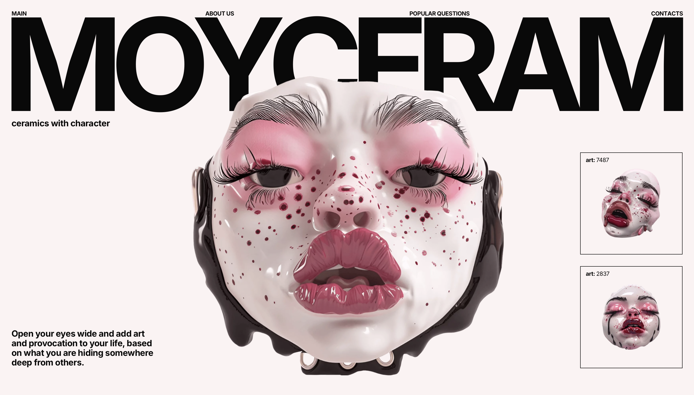
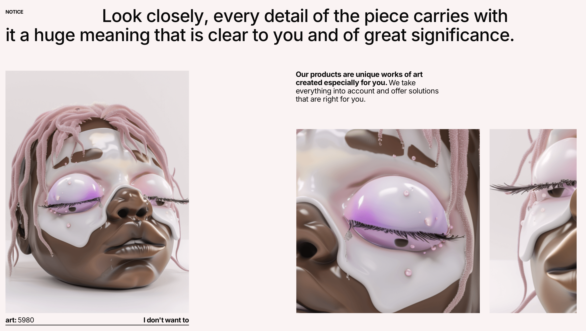
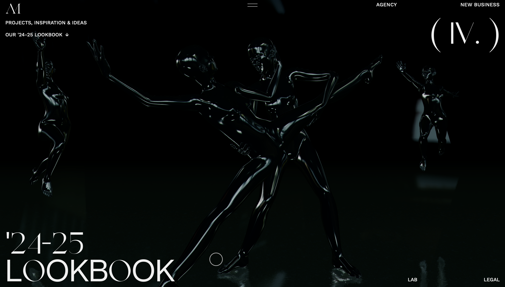
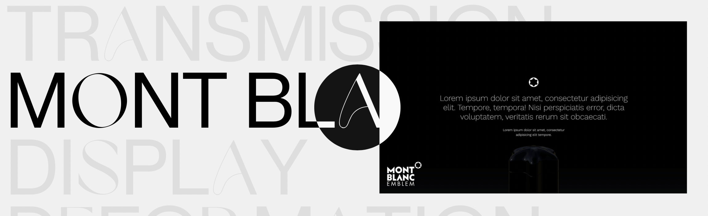
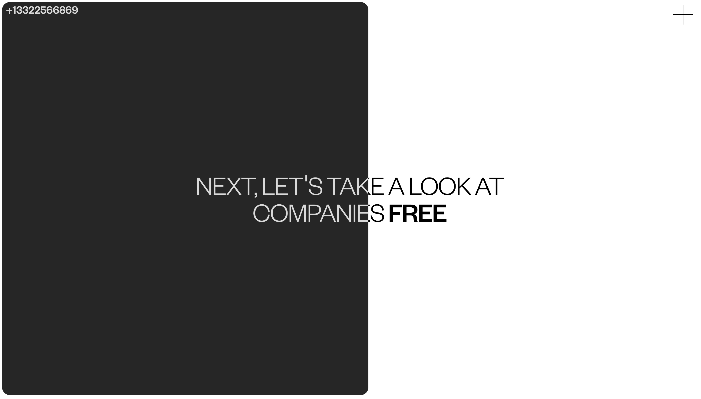
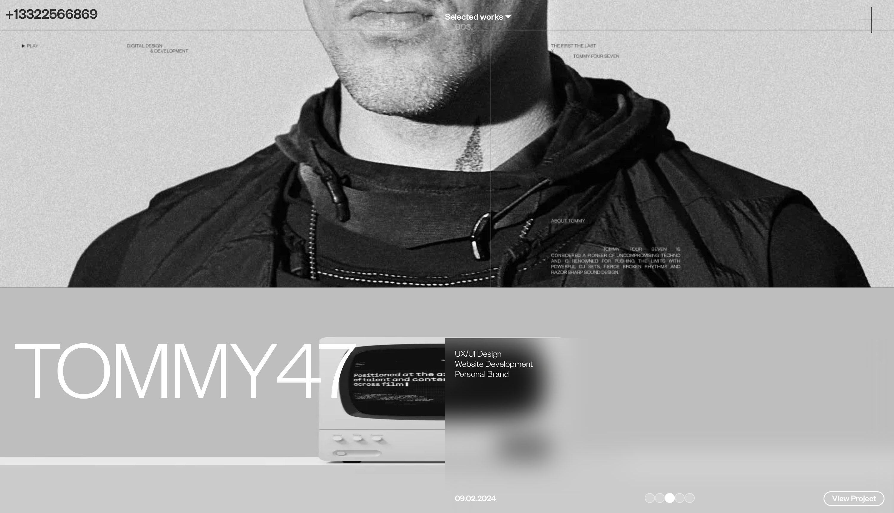
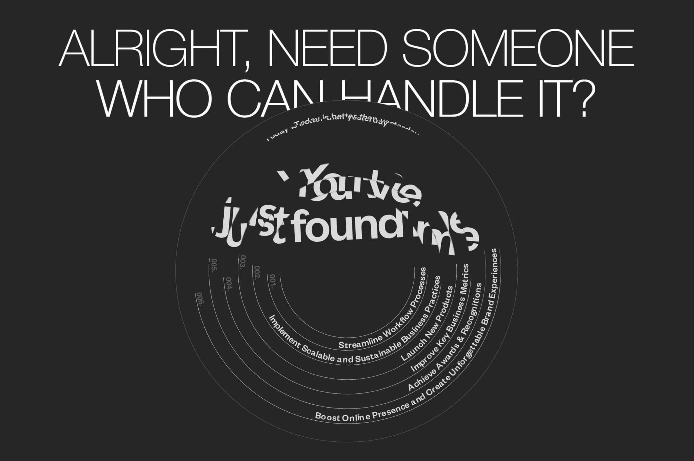

Listado de webs y sus características
Moyceram

Moyceram no solo me ha llamado por su característica y peculiar
estética, sino también por las pequeñas interacciones que realiza la
página web. El juego de esta página web se ve concentrado en las
interacciones tipográficas. En este caso, el menú de opciones se
encuentra posicionado en cada una de las letras del título de la página
web. Estas tienen una interacción al pasar el ratón por cada una de las
palabras.
A su vez, la página de Moyceram juega con la aparición de los textos al
hacer scroll down. Tiene otras interacciones interesantes como la
distorsión de las imágenes al hacer hovering con el ratón. Esto produce
un efecto de desintegración, haciendo referencia al elemento principal
de la página, la muestra de máscaras de cera.

Resn

En la página de Resn se presenta Audion, un elemento interactivo en
forma de diamante que al mantener pulsado se presentan diferentes
escenarios artísticos. No solo me parece interesante, sino que invita al
usuario a jugar con el movimiento del diamante y a probar las diferentes
imágenes que se presentan.

Además, otro efecto interactivo del diamante es al pulsar el menú
hamburguesa aparecen tres apartados con diferentes opciones. Al pulsar
una de ellas, nos introducimos dentro del diamante y la página nos
proporciona un efecto de distorsión de los colores. Esto llama la
atención del espectador y vuelve a permitir al usuario a interactuar con
los pequeños elementos de la página.
A modo de conclusión en cuanto a Resn, el concepto de diamante en
referencia al dueño de la página es muy llamativo y se representa
perfectamente mediante sus interacciones.
Andersonmoss

En cuanto a la página de Andersonmoss, lo que me ha impactado a primera
vista ha sido su estética tan misteriosa y tenebrosa. Además de su
estética tan cuidada imagen, me ha impresionado el movimiento en 3D que
realiza para darnos los detalles importantes del autor, en la que la
cámara rodea y se pasea por diferentes escenas de maniquís. Los colores,
las expresiones corporales, la luz y la presentación general deja claro
el estilo rompedor del autor y cumple muy bien su función: impactar.

Además de su magnífica presentación, en el menú de medialab podemos
encontrar otro recurso muy interactivo y que permite al usuario
divertirse con el contenido. Al permitir hacer hovering mediante una
señalización de posición del puntero, el usuario puede pasar por encima
de los títulos de los proyectos y visualizar una pequeña imagen que
revela la apariencia de cada uno de ellos. Además, la señalización del
puntero al pasar por encima de los títulos cambia de negativo a positivo
el color del fondo y de la tipografía. Recurso divertido y muy visual.
+13322566869

La presentación comienza con fuerza nada mas presentar su número de
teléfono en forma de ruleta de números y la caída gradual de la imagen
inicial y de la información. Esto hace que el usuario preste atención a
todos los detalles de manera ordenada, trazando así un orden de lectura.
Un uso de los tiempos inteligente y muy vistoso.
En las siguientes imágenes se presenta diapositivas más simples pero que
hacen al usuario partícipe de la magia de la página. En el caso de esta
imagen, al realizar scroll down el fondo de la imagen va cambiando de
color y convirtiendo la tipografía en otra tonalidad.
En general, la página presencia otros juegos de scroll down como en la
siguiente diapositiva de la página donde el trabajo del autor se
encuentra posicionado en caras de un cubo que va girando según
realizamos la acción de bajada. Como el último frame de la home page,
donde se muestra un rompecabezas de información que se va uniendo pieza
a pieza hasta quedar completamente encajado una vez bajamos al final de
la web. Estos movimientos de scroll hacen la página muy interactiva y te
permite jugar con las posibilidades de la web. Esto produce curiosidad
en las demás interacciones y hace que el usuario disfrute del contenido
y mantenga mayor atención en el contenido de la misma.



Por último, otro de los aspectos interesantes de la página es el uso de
scroll down para mover los frames en forma de carrusel, es decir, de
manera horizontal. Este movimiento le da dinamismo a la página al
cambiar de horizontal a vertical. Cada una de las diapositivas de
proyecto que muestra tienen alguna pequeña animación. En la siguiente
imagen se muestra la interacción comentada en la página.